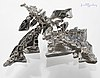

silver

Definition: Silver is a chemical element with the symbol Ag (from Latin argentum 'silver', derived from the Proto-Indo-European h₂erǵ 'shiny, white') and atomic number 47. A soft, white, lustrous transition metal, it exhibits the highest electrical conductivity, thermal conductivity, and reflectivity of any metal. The metal is found in the Earth's crust in the pure, free elemental form ("native silver"), as an alloy with gold and other metals, and in minerals such as argentite and chlorargyrite. Most silver is produced as a byproduct of copper, gold, lead, and zinc refining.
Source: Wikipedia
Wikipedia Page
Wikidata Page